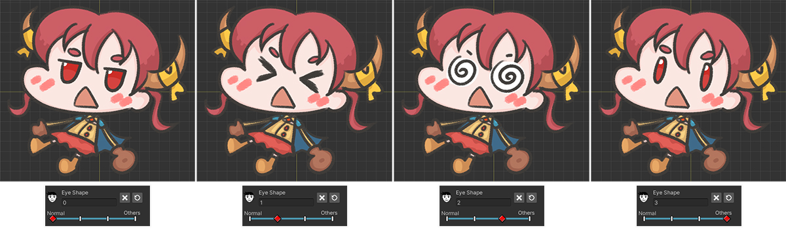
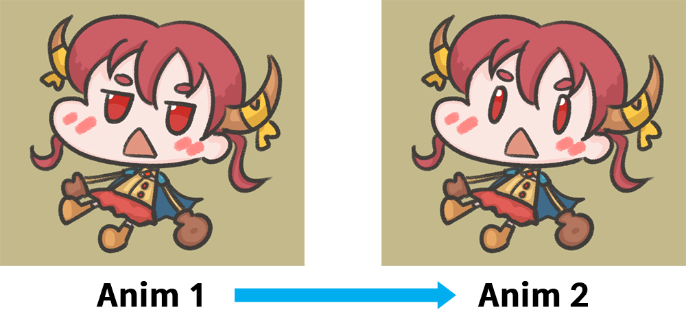
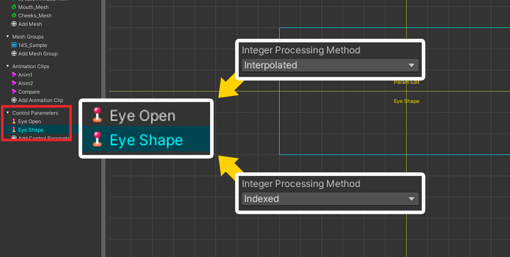

AnyPortrait > 메뉴얼 > 보간되지 않는 인덱스 파라미터
보간되지 않는 인덱스 파라미터
1.4.5
컨트롤 파라미터의 타입 중 "Int", 즉 정수형은 "Float" 타입과 달리 불연속적인 값을 가집니다.
그래서 Int 타입의 컨트롤 파라미터는 주로 보여지는 메시나 이미지를 전환할 때 사용됩니다.
비록 Int 타입 자체는 불연속적인 값을 가지지만, 그 쓰임새는 종종 서로 다른 목적을 가지곤 합니다.
컨트롤 파라미터의 값에 각각 매핑된 이미지들이 순서를 가지기도 하며, 또는 그 반대이기도 합니다.
"눈이 깜빡이는 이미지 시퀸스"나 "손을 접는 이미지 시퀸스" 등은 순서대로 이미지 또는 메시가 교체되어야 하는 경우입니다.
반대로 "감정에 따른 얼굴 표정", "부착되는 액세서리들"와 같은 경우는 순서에 무관한 후자에 해당될 것입니다.
어떤 경우든, 대체로 Int 타입의 컨트롤 파라미터는 대체로 멋지게 동작합니다.
그런데 후자, 즉 "순서가 없는 메시들을 교체하기"는 애니메이션의 "보간 (Interpolation)"에서 문제를 일으킵니다.
"보간"은 값이 A에서 B로 서서히 변하는 연산 과정인데, 순서가 없는 메시들을 교체하는 컨트롤 파라미터의 값이 서서히 변해버리는 것은 적절하지 않습니다.
애니메이션을 재생하거나, 애니메이션 내의 키프레임 간에서 보간이 발생하므로, 이때마다 컨트롤 파라미터가 의도치 않은 중간 값을 일시적으로 갖게 되는 것은 중요한 문제입니다.
이 페이지에서는 이 이슈에 대해서 전반적으로 설명드리며, 동시에 이 이슈를 해결하기 위해 v1.4.5에서 추가된 "Indexed" 속성을 설명합니다.
이미지 전환시의 "순서 여부"에 대해서
"순서를 가진 메시들의 교체"와 "순서와 무관한 메시들의 교체"를 담당하는 2개의 컨트롤 파라미터를 생성해서 비교해봅시다.

(1) 이 페이지에서는 Color Only (Controller) 모디파이어를 이용합니다.
(컨트롤 파라미터를 이용하는 모든 모디파이어에서 공통적으로 이슈가 발생할 수 있습니다.)
(2) Int 타입인 컨트롤 파라미터를 두개 생성하고 모디파이어에 모두 등록했습니다.
- Eye Open : 눈을 감는 과정을 표현하는 3개의 메시들을 전환합니다.
- Eye Shape : 감정을 표현하는 4개의 메시들을 전환합니다.
(3) 컨트롤 파라미터에 따라서 각각의 메시들이 보여지거나 숨겨집니다.
2개의 컨트롤 파라미터에 따라서 다음과 같이 보여집니다.

"Eye Open" 파라미터를 조절하면 눈을 서서히 감는 캐릭터를 볼 수 있습니다.
"눈을 뜬 상태", "조금 눈을 감은 상태", "눈을 감은 상태"가 순서대로 표현됩니다.
즉, "Eye Open" 파라미터로 제어되는 메시들은 "순서"를 가집니다.

"Eye Shape" 파라미터를 조절하면 여러가지 감정에 따른 얼굴 표정을 볼 수 있습니다.
위의 그림처럼 4개의 표정들은 단순히 각각의 파라미터 값에 매핑되어 있을 뿐, "순서"를 가지지 않습니다.
"Eye Open"과 "Eye Shape"는 동일한 Int 타입의 파라미터이며, 메시들의 보이기 여부를 제어한다는 점은 동일합니다.
하지만 표현되는 이미지들이 "순서를 가지는지 여부"는 다릅니다.
이 차이점을 인지한다면, 이 페이지에서 다루는 이슈에 대해서 쉽게 이해할 수 있을 것입니다.
순서를 가지지 않는 이미지들을 제어할 때의 문제점
이 페이지에서 다루는 문제점은 Int 타입의 컨트롤 파라미터가 이미지나 메시를 전환할 때, 그 이미지들이 "순서를 가지지 않는 경우"에 발생합니다.
조건이 다소 복잡해 보이지만, 예시를 보면 생각보다 흔하게 겪을 수 있는 문제임을 알 수 있습니다.
앞의 예제에서 소개한 컨트롤 파라미터 중 "Eye Shape"가 이 경우에 해당하므로, 이 컨트롤 파라미터로 문제를 재현해보겠습니다.

(1) 두개의 애니메이션을 만들 것입니다. 먼저 첫번째 애니메이션인 "Anim1"을 생성합니다.
(2) Control Parameters 타임라인을 추가합니다.
(3) "Eye Shape"를 타임라인에 등록합니다.
(4) 키프레임을 하나 생성합니다.
(5) 이 애니메이션에서는 컨트롤 파라미터의 값이 "0"을 가지도록 설정했습니다.
캐릭터의 "기본 상태의 얼굴"이 보여집니다.

(1) 유사한 두번째 애니메이션을 생성했습니다. 이름은 "Anim2"로 설정했습니다.
(2) 동일하게 타임라인을 구성하고 키프레임을 추가합니다.
(3) 이번에는 "3"의 값을 가지도록 설정했습니다.
파라미터의 값을 바꾸면 캐릭터의 "똑똑한 얼굴"이 보여집니다.
이제 Bake 후 유니티 씬에서 "Anim1"과 "Anim2"를 차례대로 재생해보았습니다.
CrossFade 함수를 이용하여 애니메이션이 부드럽게 전환되도록 만들어야 문제점을 발견할 수 있습니다.

유니티 씬에서 "Anim1"가 재생되는 중에 "Anim2"가 재생되도록 만든 예제의 결과입니다.
애니메이션이 "Anim1"에서 "Anim2"로 부드럽게 전환되는 도중에 의도치 않은 표정들이 나타납니다.
"기본 상태의 얼굴"에서 "똑똑한 얼굴"로 바로 전환되었어야 했는데, 의도치 않게 "놀란 얼굴"과 "어지러운 얼굴"이 나타나는 문제가 발생한 것입니다.

이 문제는 애니메이션 전환 과정에서의 "보간 (Interpolation)"에서 발생합니다.
CrossFade와 같은 애니메이션 재생 함수를 실행하면, 일정시간 동안 서서히 애니메이션 전환되면서 재생이 시작됩니다.
위의 그림에서 "Anim1"에서 "Anim2"로 전환되는 약간의 시간이 있음을 볼 수 있습니다.
컨트롤 파라미터인 "Eye Shape"의 값은 "Anim1"에서는 "0"이며, "Anim2"가 재생되면 "3"으로 바뀝니다.
이때, 애니메이션이 전환되는 짧은 시간 동안, "0"에서 "3" 사이의 값이 보간되어버립니다.
보간 과정에서 "0" > "1" > "2" > "3"의 값을 순차적으로 갖게 되는데, 이것이 문제의 원인입니다.
이 보간 과정 자체는 버그가 아닙니다.
자연스러운 애니메이션 전환 효과를 위해선 모션과 모션 사이의 중간 포즈, "Float"나 "Vector" 타입의 컨트롤 파라미터의 중간 값 등을 보간해야 하기 때문입니다.
그런데 특별히 "순서를 가지지 않는 이미지를 전환하는 Int형 컨트롤 파라미터"의 경우엔 이 보간 과정이 오히려 잘못된 결과를 만드는 것입니다.
이 문제를 해결하기 위해서는 컨트롤 파라미터에 "보간되지 않음"을 명시할 필요가 있습니다.

(1) "Eye Shape" 컨트롤 파라미터를 선택합니다.
(2) Int 타입으로 설정되어있음을 확인합니다.
(3) Int 타입의 경우 Integer Processing Method 옵션이 등장합니다. 이 옵션은 Interpolated와 Indexed의 값 중에서 하나를 선택할 수 있습니다.
(4) Indexed를 선택합니다.
이제 Bake를 하고 유니티 씬에서 동일하게 테스트해봅시다.

"Anim1"에서 "Anim2"로 전환될 때, 컨트롤 파라미터의 중간값에 의한 얼굴 표정들이 나타나지 않습니다.
덕분에 오직 "기본 상태의 얼굴"에서 "똑똑한 얼굴"로 바로 전환되는 것을 볼 수 있습니다.

컨트롤 파라미터에서 Integer Processing Method 속성의 값을 Indexed으로 설정하면, 애니메이션 보간시에 위와 같이 연산됩니다.
"Anim1"에서 "Anim2"로 전환되는 과정에서 중간값을 모두 생략하고, 오직 "시작값 (0)"에서 "도착값 (3)"으로 즉시 전환되기 때문에, 버그가 해결되는 것입니다.
키프레임간 보간 과정에서 비교하기
이 현상은 애니메이션 전환 뿐만 아니라, 키프레임간의 보간 과정에서도 볼 수 있습니다.
두개의 컨트롤 파라미터를 이용하여 어떻게 다른 결과가 보여지는지 확인해봅시다.

위에서 설명했던 두개의 컨트롤 파라미터를 서로 다르게 설정해봅시다.
순서대로 이미지가 전환되는 "Eye Open"의 경우 Integer Processing Method의 값을 Interpolated (기본값)로 설정합니다.
이미지들간에 순서가 없는 "Eye Shape"의 경우 위의 설명처럼 Indexed로 설정합니다.

비교를 해보기 위한 애니메이션을 구성해봅시다.
(1) 타임라인에 컨트롤 파라미터들을 모두 추가합니다.
(2) 키프레임간의 보간 과정을 볼 수 있도록 위와 같이 키프레임들을 추가했습니다.
앞의 키프레임에는 각 컨트롤 파라미터의 최소값, 뒤의 키프레임에는 최대값을 입력했습니다.
(3) 애니메이션 커브를 선형 (Linear)으로 변경합니다.
Int 타입의 컨트롤 파라미터의 경우 고정값 (Constant) 커브가 기본적으로 설정되어 있습니다.
이것은 보간을 억제할 수 있기 때문인데, 여기서는 보간 과정을 확인해야 하므로 선형 (Linear)으로 변경해봅시다.
(애니메이션 커브에 대해서는 관련 페이지에서 확인하세요.)

Interpolated로 설정된 "Eye Open"의 경우, 키프레임 사이에서 컨트롤 파라미터의 값이 "0 > 1 > 2"로 서서히 변하는 것을 볼 수 있습니다.
즉, 보간 연산이 적용된 것이며, 이미지들이 순서대로 보여지도록 그려졌기 때문에 그 결과는 매우 자연스럽습니다.

Indexed로 설정된 "Eye Shape"의 경우, 키프레임 보간 도중에 컨트롤 파라미터가 중간값을 가지지 않습니다.
오직 앞의 키프레임에서의 상태에서 뒤의 키프레임에서의 상태로 바로 전환되는데, 순서를 가지지 않는 이미지의 전환에 매우 적절합니다.

Indexed로 설정되지 않았다면 위와 같이 키프레임 보간 과정에서 중간 값에 해당하는 메시들이 보여질 것입니다.
다시 말해, 컨트롤 파라미터가 표현하는 이미지들이 순서를 가지는지 여부에 따라서 적절하게 속성을 결정해야 보간에서의 문제를 피할 수 있음을 알 수 있습니다.